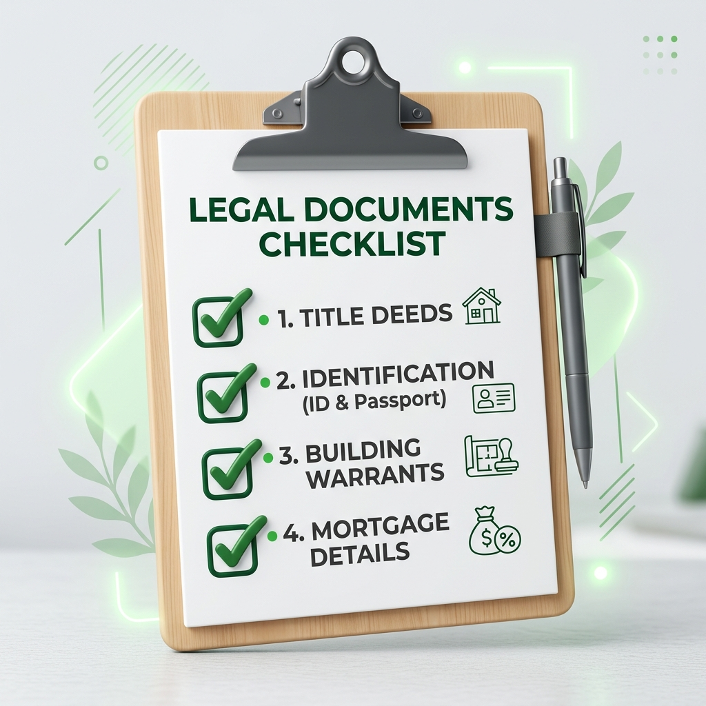

How to Sell a House Privately in Scotland
Selling a house privately in Scotland is entirely legal. You are not required by law to use an estate agent to market your property.
However, selling a property is a complex legal transaction. Choosing to bypass an estate agent saves you commission fees, but it does not remove the need for strict legal conveyancing, mandatory documentation, and proper buyer vetting.
This guide explains exactly what a private sale involves under Scottish property law, the costs you must still pay, and the alternatives available if you want to avoid the open market entirely.
Can you legally sell without an estate agent in Scotland?
Yes. An estate agent is a marketing and negotiation professional, not a legal requirement. You can list your home online yourself, conduct your own viewings, and negotiate a price directly with a buyer.
However, in Scotland, you cannot complete the legal transfer of a property yourself. You must instruct a Scottish solicitor to handle the conveyancing, the exchange of missives, and the settlement of funds.
What does a private house sale actually mean?
Before proceeding, it is vital to understand that "selling privately" is a broad term that describes several very different routes. The legal requirements vary significantly depending on which route you take:
- Self-Marketing (For Sale By Owner): You advertise the property yourself online or locally to the public, finding a stranger to buy it.
- Selling to a Known Individual: You agree a price with a family member, a friend, or an existing tenant without ever advertising the property.
- Selling to a Direct Off-Market Buyer: You agree a sale with a professional cash-buying company (like SB Properties UK) without the property ever being listed or viewed by the public.
Do not confuse these. Selling to your tenant requires different paperwork than marketing a flat on Facebook, and selling to a commercial buyer offers different guarantees than selling to a private individual.
Do you still need a solicitor?
Yes. Whether you sell through a high-street agent, list the house yourself online, or sell directly to a family member, you must use a Scottish solicitor.
In Scotland, property contracts are formed through the exchange of formal letters called "missives." Only a qualified solicitor can negotiate, draft, and conclude missives on your behalf. Your solicitor also ensures your existing mortgage is legally redeemed and that the buyer's funds are legitimate before the title is transferred.
Do you need a Home Report for a private sale?
The most common point of confusion in a Scottish private sale is the Home Report.
When a Home Report is normally required
By law, if you market a residential property for sale in Scotland, you must have a valid Home Report (no older than 12 weeks at the point of listing) available for buyers.
"Marketing" includes:
- Uploading the property to a portal or website.
- Putting a "For Sale" sign in the window.
- Posting about the sale on public social media groups.
- Distributing flyers.
If you do any of these things, you must commission a Home Report first, which typically costs between £350 and £900 depending on the property value.
Potential private and off-market exemptions
You are legally exempt from providing a Home Report if the property is never marketed to the public. This applies if you:
- Sell to a family member or friend in a private agreement.
- Sell to a sitting tenant.
- Sell off-market to a direct cash buyer or property developer.
Why sellers should verify their circumstances
The rules are strict, and fines for marketing without a Home Report are typically £500. For a complete breakdown of the rules, read our dedicated guide on Scottish Home Report exemptions.
How to sell privately in Scotland step by step
If you decide to proceed without an estate agent, you must manage the sale process yourself. Here is how a Scottish transaction typically flows.
Decide how the buyer will be found
Will you list the property on a "For Sale By Owner" portal, or do you already have a buyer lined up? Your chosen method dictates whether you must commission a Home Report and how you will manage viewings.
Establish a realistic property value
Without an agent, you must determine the asking price. Do not rely solely on property portal "asking prices," as these are marketing tools. Look at the Registers of Scotland for actual completed sold prices in your street. If you commission a Home Report, the Single Survey will provide an official valuation.
Prepare the required information and documents
Gather your title deeds (if held locally), any building warrants or completion certificates for past alterations, and guarantees for timber treatments or damp proofing.
Confirm the buyer’s identity and funding
If you find a private buyer, you must ask how they intend to pay. If they require a mortgage, their lender will usually insist on seeing a Home Report valuation. If they claim to be a cash buyer, you should ask for proof of funds (like a bank statement) before removing the property from your marketing efforts.
Instruct a Scottish solicitor
Once you and the buyer agree on a price, you must both instruct separate Scottish solicitors. You cannot use the same solicitor due to conflict-of-interest rules.
Receive and negotiate a formal offer
Your buyer’s solicitor will submit a formal written offer to your solicitor. This will include the price, the proposed Date of Entry (moving day), and various legal clauses. Your solicitor will discuss this with you and issue a "qualified acceptance" outlining any terms you wish to change.
Conclude missives
The solicitors will exchange letters negotiating the finer details. Once both parties agree to all terms, the "missives are concluded." At this point, the contract is legally binding. Neither party can pull out without severe financial penalties.
Complete conveyancing and settlement
Your solicitor will draw up the disposition (the document transferring the title). On the Date of Entry, the buyer’s solicitor transfers the purchase funds to your solicitor. Once received, you must hand over the keys.
Repay the mortgage and transfer ownership
Your solicitor uses the buyer's funds to pay off your outstanding mortgage balance (if you have one), deducts their own legal fees, and transfers the remaining net proceeds into your bank account.
Documents a private seller may need

If you are proceeding with a private sale, your solicitor will need the following documents. Gathering them early prevents delays:
- Proof of Identity: Photographic ID and recent utility bills for AML checks.
- Title Deeds: If your property is not yet on the digital Land Register.
- Home Report: Required if you intend to market the property publicly.
- Alteration Documents: Building warrants, planning permissions, and completion certificates.
- Specialist Guarantees: Paperwork for damp proofing, timber treatments, or roof repairs.
- Factoring Information: Details of your property factor and any upcoming communal repair bills.
- Mortgage Details: Your lender’s name and account number for a redemption statement.
Costs of selling privately
Selling privately removes the estate agent's commission (typically 1% to 1.5% + VAT), but you will still face material costs:
- Solicitor/Conveyancing Fees: £1,000 to £2,000+ depending on title complexity.
- Home Report: £350 to £900 (unless legally exempt).
- Marketing/Portal Fees: £90 to £300 if you use an online "sell it yourself" platform.
- Holding Costs: You must continue paying the mortgage, council tax, and insurance while waiting.
Risks and common mistakes
- Underpricing or Overpricing: Without professional guidance, sellers often underprice their homes or overprice them and fail to sell.
- Buyer Fall-Throughs: A private individual offering you a great price is meaningless if they cannot secure a mortgage.
- Ignoring Title Issues: If you made alterations without building warrants, a buyer's solicitor will find out and halt the sale.
- Fraud: Never accept a deposit directly into your personal bank account. All property funds must pass through regulated solicitor accounts to comply with Anti-Money Laundering (AML) laws.
Understand your options before deciding
Not sure if a private sale is right for you? Compare the costs and risks of selling via an estate agent versus an off-market cash buyer.
Compare an estate-agent sale with a direct buyerSelling privately to a family member, tenant or known buyer
Selling to someone you know simplifies marketing but introduces new complexities. If you sell the property below market value to a family member, their mortgage lender will have strict rules. Furthermore, if you sell an investment property to a tenant, you may still be liable for Capital Gains Tax based on the property's actual market value. Always seek tax advice.
Private marketing versus estate agent versus direct buyer
| Feature | Private Marketing (FSBO) | Estate Agent Sale | Direct Off-Market Buyer |
|---|---|---|---|
| Estate Agent Fees | Zero | 1% to 1.5% + VAT | Zero |
| Home Report Required? | Yes | Yes | No (Legally Exempt) |
| Viewings Required? | Yes (managed by you) | Yes (managed by agent) | No (one professional inspection) |
| Buyer Funding Certainty | Low (relying on stranger's mortgage) | Medium (vetted by agent) | High (guaranteed cash funds) |
| Speed to Completion | 3 to 6+ months | 3 to 6+ months | 2 to 4 weeks |
| Price Achieved | Variable | Full Open Market Value | Discounted Trade Price |
How long can a private sale take?
If you already have a cash-ready family member or are selling to a professional direct buyer, the legal conveyancing can be completed in as little as 2 to 4 weeks.
If you are marketing the property yourself to find a private buyer who requires a mortgage, the process is much longer. Finding a buyer can take months, and once an offer is accepted, the legal and mortgage process usually takes a further 8 to 12 weeks. To understand standard timelines, read our guide on how long a Glasgow sale may take.
Frequently asked questions
Can you use the same solicitor for a private house sale in Scotland?
No. Under Law Society of Scotland rules, the buyer and seller must have separate solicitors to avoid conflicts of interest, even if you are selling privately to a family member.
Do I need a Home Report to sell to my tenant?
Generally, no. If you sell directly to your sitting tenant without ever advertising the property to the public, you are legally exempt from providing a Home Report.
How do I value my house for a private sale?
You can look at recent sold prices on the Registers of Scotland, instruct a chartered surveyor for an independent valuation, or commission a formal Home Report.
Compare your plan with a direct off-market offer
If you are considering a private sale because you want to avoid estate agent fees, staging, and endless viewings, a direct sale to SB Properties UK may achieve your goals with far less risk.
We are professional cash buyers. We buy properties in Glasgow and Central Scotland directly, without a Home Report, without marketing, and without chains. We can even cover your legal costs.
If your property needs work, find out about selling a property that needs repairs.